ECE 65 reference sheet
idk
uhh
Op-amps
v_o = A(v_+ - v_-)
i_- = i_+ = 0
The op-amp has both a maximum output voltage and current.
V_{s^-} < V_{sat^-} \leq v_o \leq V_{sat^+} < V_{s^+}
Negative feedback
v_+ = v_-
Diodes
On
v_D = V_{D_0}
if i_D \geq 0.
Off
i_D = 0
if v_D < V_{D_0}.
Zener
On
v_D = V_{D_0}
if i_D \geq 0.
Off
i_D = 0
if -V_Z < v_D < V_{D_0}.
Zener
v_D = -V_Z
if i_D \leq 0.
Half-wave rectifier
When v_i \geq V_{D_0}, the diode is on, and
v_o = v_i - V_{D_0}.
When v_i < V_{D_0}, the diode is off, and
v_o = 0.
Circuit
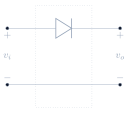Transfer
Output
Flipping the diode upside down flips the transfer function around.
Full-wave rectifier
Circuit
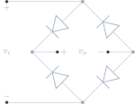Transfer
Output
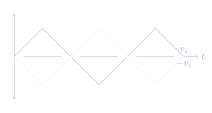Clipper
When v_i \geq V_{D_0}, the diode is on, and
v_o = V_{D_0}.
When v_i < V_{D_0}, the diode is off, and
v_o = v_i.
v_o \leq V_{D_0}
v_o \leq V_{D_0} + V_{DC}
v_o \leq V_{D_0} + V_Z
v_o \geq -V_{D_0} - V_Z
-V_{D_0} - V_{DC_2} \leq v_o \leq V_{D_0} + V_{DC_1}
-V_{D_0} - V_{Z_2} \leq v_o \leq V_{D_0} + V_{Z_1}
Circuit
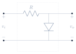Transfer
Output
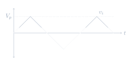Peak detector
Circuit
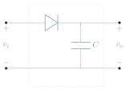A load resistor will make the capacitor leak voltage.
Output
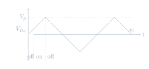
The shape of the output signal depends on
\frac{\tau}{T}. As
\frac{\tau}{T} decreases, the circuit
departs from a peak detector.
-
An ideal
\frac{\tau}{T} \to \infty. -
A good
\frac{\tau}{T} >> 1. -
For
\frac{\tau}{T} << 1, the capacitor discharges very fast, and the output resembles a rectifier circuit.
Clamp
Identical to the peak detector circuit except the output voltage is taken from the diode instead.
v_o = v_i - (V_p - V_{D_0})
v_o = v_i - (V_p - V_{D_0} - V_{DC})
v_o = v_i - (V_p - V_{D_0} - V_Z)
v_o = v_i + (V_p - V_{D_0})
Circuit
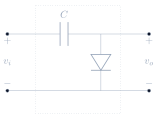Output
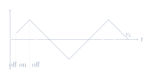BJTs
Off
i_B = 0, i_C = 0
if v_{BE} < V_{D_0} (NPN) or
v_{EB} < V_{D_0} (PNP).
On
v_{BE} = V_{D_0} (NPN) or
v_{EB} = V_{D_0} (PNP) if
i_B \geq 0.
Active
i_C = \beta i_B
if v_{CE} \geq V_{D_0} (NPN) or
v_{EC} \geq V_{D_0} (PNP).
Saturation
v_{CE} = V_{sat} (NPN) or
v_{EC} = V_{sat} (PNP)
if i_C < \beta i_B.